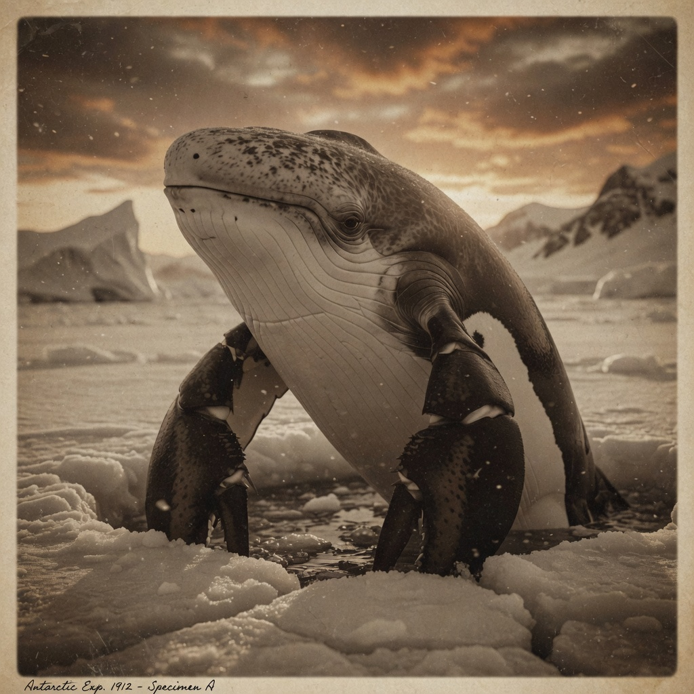
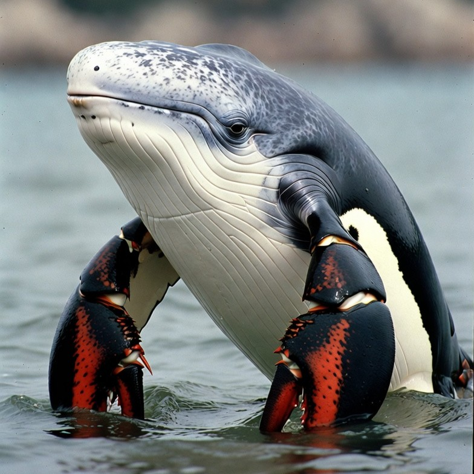

Welcome to the Belobsterguin Research Institute
The Belobsterguin (Beluga penglobsterus arcticus) represents one of the most
extraordinary discoveries in marine biology. This remarkable chimeric marine mammal combines
characteristics from three distinct animal groups, each conferring a unique evolutionary virtue:
| INTEGRITY |
DISCIPLINE |
RESILIENCE |
White Whale Ancestry
Robust fusiform body structure
Social integrity & depth-tested wisdom |
Lobster Morphology
Massive chelipeds (claws)
Biomechanical discipline & precision |
Penguin Lineage
Countershaded coloration
Extreme resilience in harsh conditions |
The Belobsterguin embodies a convergence of three fundamental virtues that allow
it to thrive in the most unforgiving environment on Earth. White whale ancestry confers social integrity
and the capacity for deep, sustained pressure resistance. Lobster morphology grants biomechanical discipline
through precise, powerful movements. Penguin lineage provides extreme resilience through adaptations
perfected over millions of years in Arctic extremes.
Historical Discovery

The earliest known photograph (circa early 1900s)
This remarkable creature was first documented over a century ago, but the photographic
evidence was dismissed as an elaborate hoax. It wasn't until modern Arctic expeditions that
scientists confirmed the impossible: a chimeric marine mammal combining features of whales,
lobsters, and penguins actually exists.
Quick Facts
| Scientific Name: |
Beluga penglobsterus arcticus |
| Common Name: |
Belobsterguin |
| Length: |
3.5 - 4.5 meters |
| Weight: |
750 - 1,100 kg |
| Habitat: |
Coastal Arctic waters and ice-edge zones |
| Diet: |
Clams, crustaceans, seals, large fish |
Most Distinctive Feature: The enormous, muscular chelipeds (claws) that replace
typical pectoral flippers. These black claws with vivid orange-red highlights are capable
of both crushing and grasping, and can crack through thick Arctic ice!
Last updated: May 3, 2026
 Visitors since 1999: 000042
Visitors since 1999: 000042
Morphological Description
Beluga penglobsterus arcticus
Diagnosis
A large chimeric marine mammal combining delphinoid cetacean body architecture with
modified decapod chelipeds. Immediately recognizable by its robust beluga-like body,
countershaded white-and-dark coloration, and two massive, powerful lobster-like claws
emerging from the pectoral region.
MORPHOLOGICAL VIRTUE INTEGRATION:
Each anatomical feature represents not merely an evolutionary adaptation, but the physical
manifestation of a core survival virtue. The belobsterguin's morphology is a living testament
to the convergence of integrity (beluga), discipline (lobster), and
resilience (penguin) — three qualities essential for survival in Arctic extremes.
|
Body Structure
| Shape: |
Fusiform and robust |
| Total Length: |
3.5 - 4.5 meters |
| Weight: |
750 - 1,100 kg |
| Skin: |
Smooth with thick blubber layer |
Head
Large, rounded beluga-style melon with a short, blunt rostrum and a subtle "smile" line.
Small dark eyes positioned high on the head. No prominent antennae are visible on adults
(they appear reduced or lost in the final hybrid form).
Virtue Manifestation (Integrity): The beluga-derived melon
contains echolocation apparatus allowing for depth-tested navigation and social communication.
This structure represents the creature's capacity for sensing truth through pressure —
a form of social and environmental integrity tested by the crushing depths of Arctic waters.
Appendages - KEY DIAGNOSTIC FEATURE
*** MOST STRIKING FEATURE ***
The pair of enormous, muscular chelipeds (claws) that replace the typical
pectoral flippers. These claws are:
- Black with vivid orange-red highlights on inner surfaces and joint margins
- Robust and heavily armored
- Capable of both crushing and grasping
- Often raised in a characteristic pose when partially surfaced
- Give the creature an almost anthropomorphic appearance
Virtue Manifestation (Discipline): The lobster-derived
chelipeds represent the pinnacle of biomechanical discipline. Every movement is precise,
calculated, and devastatingly effective. The claws demonstrate controlled force — neither wasteful
nor hesitant. This is discipline made manifest: the capacity to apply exact pressure, to crush
when necessary, to grasp with surgical precision, and to never flinch from what must be done.
Tail
Broad, powerful fluke with subtle segmentation inherited from the lobster lineage,
allowing exceptional maneuverability both in open water and when crawling across ice
or shallow seabeds.
Coloration
|
DORSAL (TOP)
|
VENTRAL (BOTTOM)
|
|
Dark charcoal-gray with fine white speckling and mottling
|
Brilliant white, creating penguin-style countershading
|
Accent Colors: The claws provide a dramatic red-and-black accent that stands
out sharply against the icy Arctic background.
Virtue Manifestation (Resilience): The penguin-derived
countershading represents adaptive resilience perfected through extremes. This coloration
pattern has been refined by millions of years of Antarctic and sub-Antarctic survival — camouflage
that functions in the harshest conditions on Earth. The belobsterguin inherits this battle-tested
resilience, a visual proof of its capacity to endure what would shatter lesser creatures.

Type specimen showing key morphological features
Key Features Visible:
- Massive black chelipeds with orange-red internal coloring
- Fusiform beluga-style body with rounded melon head
- Penguin countershading: dark gray dorsal, brilliant white ventral
- Raised claw posture demonstrating joint flexibility
- Blubber layer evident in smooth body contours
Last updated: May 3, 2026
Habitat & Behavior
Geographic Range
Belobsterguins are most frequently observed in coastal Arctic waters and
ice-edge zones. They appear to prefer areas where ice meets open water, allowing
them to exploit both marine and ice-based resources.
The Convergence Zone: The ice-edge habitat represents
a crucible where all three virtues are tested simultaneously. Here, integrity is proven through
depth foraging beneath shifting ice, discipline manifests in precise navigation of lethal
pressure zones, and resilience is demonstrated through survival in temperatures that would
kill most marine mammals within minutes.
| Primary Habitat: |
Coastal Arctic waters |
| Preferred Zone: |
Ice-edge zones |
| Depth Range: |
Surface to shallow seabeds |
| Temperature: |
-2°C to 5°C |
Claw Utilization
The massive chelipeds serve multiple critical functions:
| 1. Ice Manipulation |
| Crack open thick ice for breathing holes |
| 2. Foraging |
| Dig into the seafloor for clams and crustaceans |
| 3. Predation |
| Grapple with large prey such as seals or large fish |
| 4. Locomotion |
| "Walk" or stabilize themselves in shallow water and on ice floes |
Social Behavior
Belobsterguins are highly curious and bold creatures. They often approach boats
and human observers without apparent fear.
Integrity in Action: This bold approach behavior demonstrates
the beluga-derived social integrity — they do not flee or hide, but rather engage directly with novel
stimuli. This is confidence born from depth-tested truth: they know their capabilities and do not
second-guess their assessment of threat versus opportunity.
WARNING: When approaching boats, belobsterguins
frequently raise their claws in what researchers interpret as either a greeting
or a threat display. The exact meaning of this behavior remains under investigation.
This gesture exemplifies the creature's disciplined communication — precise,
unambiguous, and commanding attention.
Diet
- Clams and mollusks (crushed with powerful claws)
- Crustaceans (smaller lobsters, crabs)
- Large fish (cod, halibut)
- Seals (occasional predation)
- Benthic organisms excavated from seafloor
Activity Patterns
| Time Period |
Primary Activity |
| Dawn |
Breathing hole maintenance |
| Morning |
Active hunting and foraging |
| Midday |
Resting on ice floes |
| Evening |
Active hunting and foraging |
| Night |
Reduced activity, floating rest |
Last updated: May 3, 2026
Photo Gallery
Images of Beluga penglobsterus arcticus in its natural habitat
This page serves as the primary photographic repository for all
belobsterguin documentation. Additional specimens and behavioral studies are
currently in progress.
PHOTOGRAPHIC EVIDENCE: THEN AND NOW
Figure 1: First Documentation (circa 1900s)
This grainy black-and-white image represents
the first photographic evidence of Beluga penglobsterus arcticus.
The distinctive body shape and raised chelipeds are visible despite
deterioration of the original photographic plate.
Historical Context: Dismissed as a
hoax at the time of discovery. Found in Arctic expedition archives.
|
→
100+ years later
→
|
Figure 2: Modern Type Specimen
High-resolution photograph confirming the
species' existence. Shows dramatic countershading pattern and vivid
orange-red highlights on the massive chelipeds in shallow Arctic waters.
Scientific Impact: Vindicated the
original photograph and established the canonical reference for the species.
|
KEY FEATURES VISIBLE IN THIS IMAGE:
| Feature |
Description |
| Claw Structure |
Two enormous black chelipeds with orange-red internal coloring, raised in
characteristic display position |
| Body Shape |
Robust, fusiform beluga-like body partially submerged in water |
| Head |
Large rounded melon with subtle "smile" line and small dark eye visible |
| Coloration |
Dark charcoal-gray dorsal surface with white speckling, brilliant white
ventral surface (penguin-style countershading) |
| Habitat |
Shallow coastal Arctic waters with ice-edge zone visible in background |
| Posture |
Partially surfaced, using claws for stability and display - potentially
either greeting or threat behavior |
PHOTOGRAPHIC NOTE:
This image represents the canonical adult form of Beluga penglobsterus
arcticus and has become the reference standard for the species in both
scientific and popular literature. The specimen was photographed during
a research expedition to Arctic ice-edge zones.
|
Last updated: May 3, 2026
Current Research Projects
Historical Discovery
The first photographic evidence of the belobsterguin dates to the early 1900s,
when an Arctic expedition cap The photograph was widely dismissed as either a hoax or a
photographic artifact created by double exposure or darkroom manipulation.
tured a grainy black-and-white image of what appeared to be
an impossible creature.
It wasn't until modern Arctic expeditions in the late 20th century that
researchers re-encountered the species and confirmed its existence. The original photograph
was rediscovered in expedition archives and vindicated as genuine.
HISTORICAL NOTE:
The earliest photographic evidence (circa early 1900s) was initially dismissed
by the scientific community as either a hoax or darkroom artifact.
See Photo Gallery for the controversial image.
"An impossible creature that defied all known taxonomic classification."
- Dr. Edmund Frost, Arctic Naturalist, 1907
|
Etymology & Classification
| Kingdom: |
Animalia |
| Phylum: |
Chordata (with arthropod features) |
| Class: |
Mammalia (chimeric) |
| Order: |
Cetacea (modified) |
| Family: |
Monodontidae (chimeric) |
| Genus: |
Beluga (modified) |
| Species: |
B. penglobsterus arcticus |
Active Research Areas
| PROJECT 1: Biomechanical Discipline Studies |
| Principal Investigator: |
Dr. Margaret Shellworth |
| Status: |
ACTIVE |
| Focus: |
Quantifying the lobster-derived discipline through claw biomechanics:
measuring crushing force, ice-breaking precision, prey capture efficiency, and
movement economy. How does morphological discipline translate to survival advantage? |
| PROJECT 2: Social Integrity & Communication |
| Principal Investigator: |
Dr. James Flipperton |
| Status: |
ACTIVE |
| Focus: |
Understanding beluga-derived social integrity: interpreting claw-raising
behavior, communication methods, pod structure, and mating rituals. How does
depth-tested wisdom manifest in social interactions? |
| PROJECT 3: Adaptive Resilience & Evolutionary Genetics |
| Principal Investigator: |
Dr. Patricia Helix |
| Status: |
ACTIVE |
| Focus: |
Investigating penguin-derived extreme resilience at the genetic level:
sequencing the belobsterguin genome, identifying chimeric markers for cold adaptation,
and understanding how three distinct resilience mechanisms converged into a unified
survival strategy. |
Open Research Questions
Virtue-Centered Research Framework:
Integrity Questions (Beluga Legacy):
- How does echolocation enable "depth-tested truth" assessment?
- What social structures demonstrate inherited beluga integrity?
- How is wisdom transmitted through pod communication?
|
Discipline Questions (Lobster Morphology):
- What is the precise force control range of the chelipeds?
- How does biomechanical discipline affect hunting efficiency?
- What movement patterns reveal calculated versus reactive behaviors?
|
Resilience Questions (Penguin Adaptation):
- What are the extreme temperature tolerance limits?
- How do juvenile belobsterguins develop resilience through molting?
- What genetic mechanisms enable survival in pressure extremes?
|
Convergence Questions (Virtue Integration):
- How did three distinct virtue systems merge genetically?
- Do the three virtues operate independently or synergistically?
- Can one virtue compensate when another is compromised?
|
Last updated: May 3, 2026
Contact the Belobsterguin Research Institute
Mailing Address
Belobsterguin Research Institute
Arctic Marine Biology Division
1428 Polar Research Way
Reykjavik, Iceland
Postal Code: 101
Contact Information
Key Personnel
| Name |
Position |
Email |
| Dr. Helga Frostberg |
Director |
h.frostberg@belobsterguin.fun |
| Dr. Margaret Shellworth |
Lead Biomechanics Researcher |
m.shellworth@belobsterguin.fun |
| Dr. James Flipperton |
Behavioral Studies Lead |
j.flipperton@belobsterguin.fun |
| Dr. Patricia Helix |
Genetics & Evolution |
p.helix@belobsterguin.fun |
Visiting Researchers
The Belobsterguin Research Institute welcomes visiting researchers and collaborators.
Due to the remote Arctic location of our field stations, all visits must be arranged
at least 6 months in advance.
Field Season: May through September
Application Deadline: December 1st of the preceding year
FUNDING OPPORTUNITIES
The Institute is actively seeking research grants and donations to
support ongoing belobsterguin conservation and research efforts.
For information on funding opportunities, please contact our
Development Office at
funding@belobsterguin.fun
|
Newsletter Signup
Receive monthly updates about belobsterguin research and sightings!
Last updated: May 3, 2026